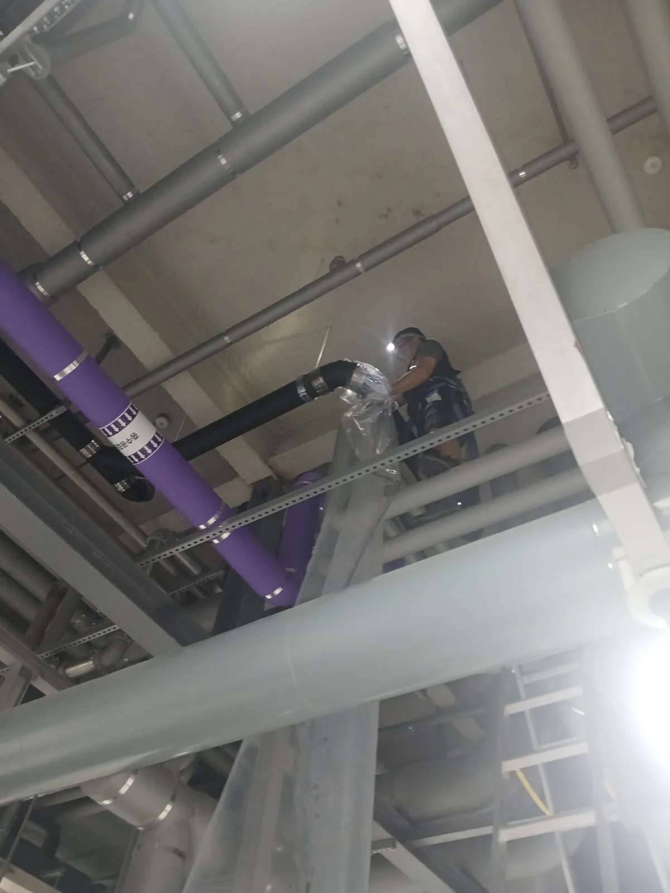

금천구 가산동 배관공사, 현장 도착 후 진단
금천구 가산동 현장에 도착해 누수 흔적과 배관 연결 상태를 점검했습니다. 천장 가까운 높은 위치에 설치된 배관의 연결부에서 지속적으로 오수가 흘러나온 흔적이 확인됐습니다.
외부에서 보이는 부분만 보수할 경우 누수가 다시 발생할 가능성이 있어 문제가 발생한 배관 구간을 철거해 내부 상태를 확인했습니다. 철거 결과 배관을 밀폐하는 고무 가스켓이 심하게 노후돼 탄성과 밀착력을 잃은 상태였습니다.
1단계: 증상 확인과 필요한 장비 작업
누수 구간 주변을 안전하게 통제하고 고소작업을 위한 장비와 작업 위치를 확보했습니다. 기존 노허브배관을 분리한 뒤 노후 배관과 연결부 커플링, 내부 가스켓의 상태를 세밀하게 확인했습니다. 손상된 가스켓은 정상적인 밀폐 기능을 기대하기 어려워 해당 배관 구간 전체를 교체하기로 했습니다.

2단계: 원인 구간 처리와 정상 작동 확인
고소작업을 통해 새로운 노허브배관을 기존 배관 규격과 위치에 맞춰 설치했습니다. 배관 연결부마다 새로운 고무 가스켓과 노허브 커플링을 적용한 후 중심과 경사를 맞춰 단단히 체결했습니다. 시공을 마친 뒤 배수를 실시해 연결부 누수 여부와 배관의 정상적인 흐름을 최종 확인했습니다.

작업 결과와 재발 방지 안내
노후 배관과 손상된 가스켓을 교체하면서 연결부 누수가 해결되고 배관의 밀폐 성능이 정상적으로 회복됐습니다. 노허브배관은 배관 자체에 균열이 없어도 연결부 가스켓이 경화되거나 커플링이 느슨해지면 누수가 발생할 수 있습니다. 천장이나 고소 구간에서 물이 떨어지거나 악취와 오염 흔적이 보인다면 연결부 상태를 조기에 점검하는 것이 추가 피해를 줄이는 방법입니다. 신라건축설비는 노후배관 교체부터 고소 배관공사까지 늘 당신 곁에서 안전하고 정확하게 시공해드리겠습니다.
최종 조치: 누수가 발생한 노후 노허브배관과 손상된 연결부 가스켓을 철거했습니다. 이후 새로운 배관과 노허브 커플링을 설치하고 연결부를 견고하게 체결해 누수 구간을 복구했습니다.
현장 방문 전 확인하는 비용과 작업 범위
신라건축설비는 현장 증상과 배관 구조를 확인한 뒤 필요한 작업과 예상 비용을 안내합니다. 단순 관통으로 해결되는지, 배관내시경·석션·고압세척 또는 추가 장비가 필요한지는 현장 상태에 따라 달라집니다. 출장비와 야간 작업비, 추가 장비 비용이 발생할 수 있는 경우 작업 전에 먼저 설명하고 동의를 받은 범위에서 진행합니다.
업체를 선택할 때 확인할 사항
무조건적인 ‘0원’ 표현보다 실제 작업 범위, 추가 비용 조건, 사용 장비와 사후 대응 기준을 확인하는 것이 중요합니다. 해결되지 않았을 때의 비용 기준과 작업 후 동일 증상 발생 시 점검 범위를 사전에 문의해두면 불필요한 분쟁을 줄일 수 있습니다.
금천구 배관공사 자주 묻는 질문
공사 전에 견적을 받을 수 있나요?
금천구 가산동 현장처럼 건물 내부에 설치된 배관 연결부에서 오수가 새어 나오는 누수 증상이 발생했습니다. 배관이 높은 곳에 설치돼 있어 고소작업 장비와 안전조치를 갖춘 전문 배관공사가 필요한 상황이었습니다. 증상은 원인이 현장마다 다를 수 있습니다. 현장 구조와 필요한 공사 범위를 확인한 뒤 견적을 안내합니다.
추가 공사가 생기면 바로 진행하나요?
추가 범위가 필요한 경우 고객에게 먼저 설명하고 동의 후 진행합니다.
작업 후 A/S는 어떻게 되나요?
작업 범위와 원인에 따라 사후 점검 기준을 안내합니다.
배관공사 서울·경기 출동지역
신라건축설비는 금천구 가산동 현장을 포함해 서울 25개 구와 경기도 31개 시·군의 배관 문제를 상담합니다. 현장 거리와 기사 배정 상황에 따라 출동 가능 여부를 먼저 안내드립니다.
서울 전 지역
강남구 · 강동구 · 강북구 · 강서구 · 관악구 · 광진구 · 구로구 · 금천구 · 노원구 · 도봉구 · 동대문구 · 동작구 · 마포구 · 서대문구 · 서초구 · 성동구 · 성북구 · 송파구 · 양천구 · 영등포구 · 용산구 · 은평구 · 종로구 · 중구 · 중랑구
경기도 주요 출동지역
수원시 · 용인시 · 고양시 · 화성시 · 성남시 · 부천시 · 남양주시 · 안산시 · 평택시 · 안양시 · 시흥시 · 파주시 · 김포시 · 의정부시 · 광주시 · 하남시 · 광명시 · 군포시 · 양주시 · 오산시 · 이천시 · 안성시 · 구리시 · 의왕시 · 포천시 · 양평군 · 여주시 · 동두천시 · 과천시 · 가평군 · 연천군